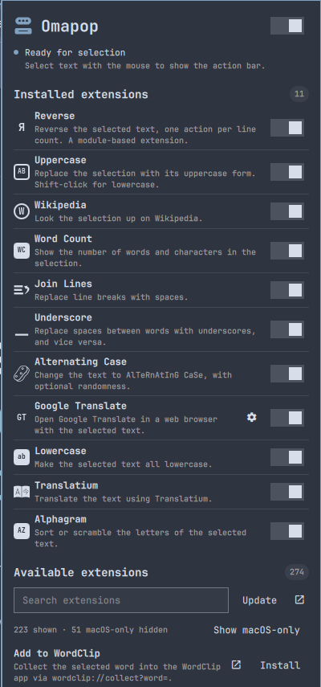

Copy. Search. Done.
Drag to select, double-click a word, or triple-click a line. Cut, copy, paste, and search are a click away, with actions that fit the selection and app.
that thing you were reading
A little more flow. For Omarchy.
The next thing you need to do, right next to the text you just selected. Copy, search, translate, transform. Then get on with your day.
Free & open source Made for your Linux desktop
An idea. A sentence. A tiny task.
A little less getting in your own way.
A hands-on web demo. The real thing lives on your desktop.
LESS FRICTION. MORE DOING.
Little tasks shouldn’t take you out of your flow.
Omapop brings the useful bits to you.
Drag to select, double-click a word, or triple-click a line. Cut, copy, paste, and search are a click away, with actions that fit the selection and app.
Select a URL to open it. Select a file path to reveal it in your file manager. The bar knows when there’s more to your text than words.
~/Projects/a-good-ideaMake it uppercase. Count the words. Join the lines. Look it up on Wikipedia. Add extensions for the small jobs you do again and again.
MAKE IT YOURSYOUR ACTIONS. YOUR WAY.
Browse the PopClip Extensions Directory right from Omapop. Find an action, install it, and put it to work.
Word Count, Wikipedia, Uppercase, and Reverse ship as examples you can use and learn from.
Toggle actions on and off and expand an extension’s settings in place. No hunting through config files.
Write a YAML snippet, a shell script, or a JavaScript action. Your workflow doesn’t have to fit someone else’s menu.
Compatible doesn’t mean every extension: AppleScript and macOS Services need a Mac, and app-specific actions need their target app. Omapop is an independent project, not affiliated with PopClip.

A GOOD DESKTOP CITIZEN
Click elsewhere, start typing, or change windows and the bar disappears. Hold Super while selecting to keep it away.
Set your own shortcut, navigate with arrow keys, and press Enter to act. Long-press to bring up actions without selecting text.
The real bar follows your Omarchy theme. Tune its position, choose a search engine, and exclude the apps where you don’t need it.
TWO COMMANDS. THEN JUST SELECT.
Install the plugin, enable it, and select some text.
That’s your new shortcut.
omarchy plugin add https://github.com/jondkinney/omapop.git
omarchy plugin enable io.github.jondkinney.omapopInstalled disabled, so you can review it before enabling.
For Omarchy with Hyprland 0.56+ and Quickshell. Uses Omarchy’s standard clipboard and Python helpers. JavaScript extensions also need Deno or Node.js. Full requirements ↗
A FEW GOOD QUESTIONS
It’s an independent, open-source selection-action tool for Omarchy, inspired by the same idea. Omapop supports the PopClip extension format, but it isn’t made by or affiliated with PopClip. Mac-only actions won’t run on Linux.
Omapop uses Wayland’s primary selection. It works in apps that expose their selected text that way. Some terminal apps handle selection themselves; in Foot, holding Shift while dragging lets the terminal select it instead. Cut and text-replacing actions are only offered where editing is supported.
The core selection handling runs locally. Search and URL actions send the relevant text to the service you choose. Third-party extensions can run code and contact outside services, so review their source and only install ones you trust.
Omapop is currently an Omarchy Shell plugin, using Quickshell and Hyprland’s Lua API. It isn’t a standalone app for other Linux desktops, macOS, or Windows.
Free to use, inspect, change, and share under the MIT license. No Omapop account, subscription, or license key. External services used by extensions may have their own accounts or pricing.